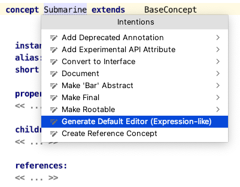
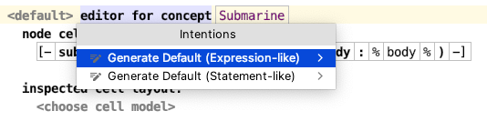

An editor definition can be created and filled with the concept's properties, children and references. Depending on the concept's contents, two options are typically available:

These can be later re-generated in the editor definition itself:
